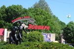
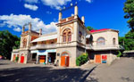
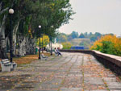
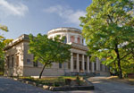
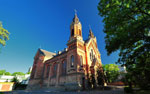
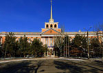
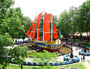
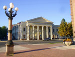
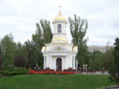

Николаевский зоопарк
{kind=link}
Зоопарк Николаева считается одним из лучших в Европе, входит во Всемирную ассоциацию зоопарков и аквариумов (WAZA). Основан по инициативе председателя Городской думы Николаева Н. Леонтовича как частный аквариум-музей со свободным доступом публики. Сейчас коллекция насчитывает почти 5690 особей 460 видов, многие из которых занесены в Красную Книгу.
Наибольшим успехом у посетителей пользуются крупные животные: львы, тигры, медведи, бегемоты. Здесь живет старейшее животное в зоопарках Украины - 65-летний крокодил Вася. Детей веселят мартышки, шимпанзе и макаки, а взрослых - "маленький народец" сурикаты, для которых построен специальный вольер "Поместье сурикатов". В любое время года поражает буйством красок сад живых тропических бабочек. Вольер для домашних животных "Дедова хата" оформлен в фольклорном стиле, являясь своеобразным музеем сельского быта юга Украины. У зоопарка есть свой гимн, флаг, эмблема, юбилейная монета и почтовая марка.
Николаевский яхт-клуб
{kind=link}
Старейший на Украине Николаевский яхт-клуб был основан в 1887 г. Он размещается в северо-западной части города по улице Спортивная, 7, на реке Южный Буг. Здание яхт-клуба в стиле итальянского ренессанса было спроектировано архитектором и членом яхт-клуба Леопольдом Роде.
Николаевский яхт-клуб был создан по инициативе капитана первого ранга Е. Голикова, ученого В. Рюмина и историка Н. Аркаса. Первое учредительное собрание состоялось в августе 1887 г. в «молдаванском доме», который размещался на набережной Ингула. На собрании был обсужден проект Устава будущего яхт-клуба, определен размер членских взносов и избраны члены правления. На втором собрании в сентябре 1887 г. Е. Голиков был избран секретарем комитета. Официальное открытие яхт-клуба состоялось в мае 1889 г.
Флотский бульвар
{kind=link}
Флотский бульвар - бывший Морской — основан на месте старой свалки адмиралом А.С.Грейгом. Протянулся бульвар над Военной гаванью вдоль берега реки Ингул, от Адмиральского дома (дом командующего Черноморским флотом) до Адмиралтейской стены.
Открыт бульвар был в 1826 году, название «Морской» связано с видом, что с него открывался - Адмиралтейство, Военная гавань и ряд других военно-морских объектов. Также с бульвара можно полюбоваться Бугским лиманом, ведущим к Черному морю. После войны к юбилею адмирала С.О.Макарова из "Морского бульвара" был переименован в "Бульвар Макарова", а позже - во Флотский, как историческое напоминание о прочной связи города с Черноморским флотом.
Николаевская обсерватория
{kind=link}
Николаевская обсерватория находится в центральной части города Николаева, на улице Обсерваторная и является одной из самых старых обсерваторий Восточной Европы, а также памятником архитектуры общенационального значения. Историческое научное учреждение было основано в 1821 г. адмиралом А. Грейгом как морская обсерватория.
Изначально она существовала как южное отделение Главной астрономической обсерватории, а с 1992 г. получила статус самостоятельного научного учреждения страны. В 2002г. стала научно-исследовательским институтом «Николаевской астрономической обсерваторией», который помимо основной научной деятельности ведет и научно-просветительские работы. В 2007 г. Николаевская обсерватория попала в число объектов, которые претендовали на включение в список Всемирного наследия ЮНЕСКО от Украины.
Католический храм Св. Иосифа
{kind=link}
Главным римско-католическим храмом города Николаева и области является церковь Святого Иосифа, которая расположена на улице Декабристов, 32.
Костел Святого Иосифа был возведен в 1896 г. по проекту известного одесского архитектора В. Домбровского. Закладка храма состоялась в 1890 г. на празднование столетия города Николаева. Строительство костела велось на средства прихожан-католиков, николаевских жителей, а также жителей соседних сел.
Адмиралтейство
{kind=link}
Адмиралтейство – название, которое используется по отношению к административному зданию Николаевского судостроительного завода «имени 61 коммунара».
Здание Адмиралтейства расположено в городе Николаеве на левом побережье реки Ингул. Замыкая хорошо озеленённую и широкую улицу Садовую, служит композиционным центром площади, которая сформировалась на её пересечении с улицей Адмиральской. Окружённое архитектурными памятниками адмиралтейство очень хорошо вписывается в исторически сформировавшийся ансамбль.
Здание Николаевского адмиралтейства было построено в 1951 г. в традиционном стиле русского классицизма. Его шпиль венчает кораблик с заложенным в нем посланием. Автором проекта выступил Н. Шаповаленко.
Детский городок Сказка
{kind=link}
Детский городок «Сказка» - это игровой развлекательный комплекс, который расположен в центре города Николаева по улице Декабристов, 38-а. Общая площадь парка - 3,5 га. В детском городке «Сказка» проводятся всевозможные детские праздники и конкурсы, кроме того он является музеем всех видов декоративного и художественного искусства.
До 1982 г. на месте нынешнего городка размещался рынок. В 1982 г. было принято решение перенести рынок, а на его месте сделать парк для детей, торжественное открытие которого состоялось в мае 1982 г. Автор проекта - архитектор В. Попов.
В самом начале был открыт павильон, где проводились концерты, на крышу которого усадили Золотого Петушка. Через некоторое время в «Сказке» была построены красивейшая деревянная крепость, напоминающая всем о русских народных сказках, и каменный замок из Средневековья.
Русский драматический театр
{kind=link}
Первым русским театром, возникшим в республике в послереволюционное время, является Николаевский академический художественный русский драматический театр, который расположен в исторической части города Николаева, на пересечении улиц Адмиральской и Лягина. Здание - памятник архитектуры, в котором размещается театр, было построено в 1881 г. мещанином Карлом Ивановичем Монте по проекту архитектора Т. Брусницкого. Нынешний творческий коллектив театра – это один из самых старых театральных коллективов Украины, который был организован в 1922 г. в Луганске русским режиссёром и актёром Г. Свободиным.
Прямоугольное в плане здание Николаевского театра представляет собой сооружение с доминирующим объёмом сценической коробки. Его фасад выполнен в псевдо-ренессансном стиле. Главный вход выделяется монументальным шестиколонным портиком, который был возведен в послевоенное время.
Часовня Святого Николая
{kind=link}
В 2004 году в Николаеве на пл. Ленина была заложена часовня Святого Николая. Идея построить в честь покровителя города - Святого Николая - часовню принадлежала предпринимателю Г. Жильцову. После возведения стен часовни дальнейшее строительство было приостановлено из-за финансовых трудностей предпринимателя.
В 2007 г. другой предприниматель Николаева - И. Данишевский, получив благословение Архиепископа Питирима, продолжил постройку. Но это уже была не часовня, а храм - место, где проводится богослужение православной церкви - Божественная Литургия. В соответствии с новым архитектурным планом, две ранее выстроенные стены снесли, соорудили притвор и расширили алтарную часть. Для позолоты крестов использовалось сусальное золото, а купол покрыт нитритом титана, называемый в народе «синий златосвет». Над купольной частью специалисты трудились около двух лет. И через год, в марте, купол и крест с помощью специального крана установили на 18-метровую высоту.